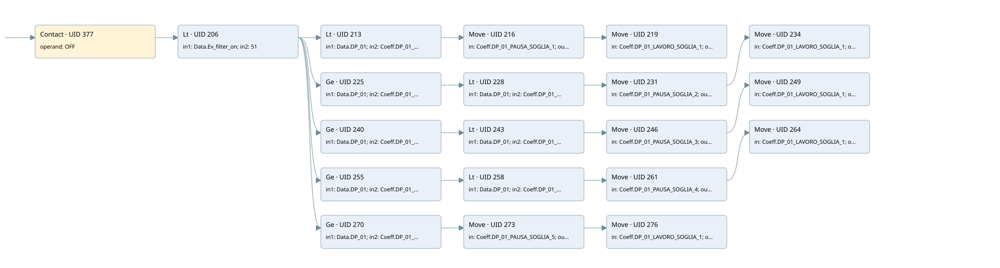

time work/pause by dp01
filter · 검색 색인 순서 2 · 원본 내부 NID 추정 1
백업 PLF 원본의 2723000 바이트 위치에서 복원한 XML. 검색 문서 1883의 객체 키 161022002411000000000000와 연결했다. 이름 해석 39/39개. 남은 RefId는 상수 또는 미해석 참조다.
연결 구조 다시 그리기
원본 Part/PCon/Wire를 이용한 연결도다. TIA 화면의 래더 배치 또는 실행 결과를 재현한 그림은 아니다. 핀 연결은 아래 표와 원본 XML을 기준으로 읽는다. 노드 위에 마우스를 두면 피연산자 이름을 볼 수 있다.

접점·코일·블록과 피연산자
| Part UID | Gate | Negated 핀 | 연결 피연산자 |
|---|---|---|---|
| 377 | Contact | operand = OFF | |
| 206 | Lt | in1 = Data.Ev_filter_on; in2 = 51 | |
| 213 | Lt | in1 = Data.DP_01; in2 = Coeff.DP_01_SOGLIA_1 | |
| 216 | Move | in = Coeff.DP_01_PAUSA_SOGLIA_1; out1 = Data.LAVA_PAUSA | |
| 219 | Move | in = Coeff.DP_01_LAVORO_SOGLIA_1; out1 = Data.LAVA_LAVORO | |
| 225 | Ge | in1 = Data.DP_01; in2 = Coeff.DP_01_SOGLIA_1 | |
| 228 | Lt | in1 = Data.DP_01; in2 = Coeff.DP_01_SOGLIA_2 | |
| 231 | Move | in = Coeff.DP_01_PAUSA_SOGLIA_2; out1 = Data.LAVA_PAUSA | |
| 234 | Move | in = Coeff.DP_01_LAVORO_SOGLIA_1; out1 = Data.LAVA_LAVORO | |
| 240 | Ge | in1 = Data.DP_01; in2 = Coeff.DP_01_SOGLIA_2 | |
| 243 | Lt | in1 = Data.DP_01; in2 = Coeff.DP_01_SOGLIA_3 | |
| 246 | Move | in = Coeff.DP_01_PAUSA_SOGLIA_3; out1 = Data.LAVA_PAUSA | |
| 249 | Move | in = Coeff.DP_01_LAVORO_SOGLIA_1; out1 = Data.LAVA_LAVORO | |
| 255 | Ge | in1 = Data.DP_01; in2 = Coeff.DP_01_SOGLIA_3 | |
| 258 | Lt | in1 = Data.DP_01; in2 = Coeff.DP_01_SOGLIA_4 | |
| 261 | Move | in = Coeff.DP_01_PAUSA_SOGLIA_4; out1 = Data.LAVA_PAUSA | |
| 264 | Move | in = Coeff.DP_01_LAVORO_SOGLIA_1; out1 = Data.LAVA_LAVORO | |
| 270 | Ge | in1 = Data.DP_01; in2 = Coeff.DP_01_SOGLIA_4 | |
| 273 | Move | in = Coeff.DP_01_PAUSA_SOGLIA_5; out1 = Data.LAVA_PAUSA | |
| 276 | Move | in = Coeff.DP_01_LAVORO_SOGLIA_1; out1 = Data.LAVA_LAVORO |
접점 경로를 펼친 조건식
Contact·O/A·비교기의 원본 연결을 읽기 쉽게 펼친 보조 해석이다. POWER는 전원 레일 시작을 뜻한다. 호출 블록·에지·타이머의 내부 동작과 다중 쓰기 순서는 이 표로 실행 검증하지 않았다. 미해석 핀과 RefId는 원문 연결표에서 확인한다.
| UID | 동작 | 대상 | 원본 접점 경로 | 내용 |
|---|---|---|---|---|
| 216 | Move | Data.LAVA_PAUSA | ((OFF AND [Data.Ev_filter_on < 51]) AND [Data.DP_01 < Coeff.DP_01_SOGLIA_1]) | Move 입력 Coeff.DP_01_PAUSA_SOGLIA_1 |
| 219 | Move | Data.LAVA_LAVORO | Move UID 216.eno (블록 동작 확인) | Move 입력 Coeff.DP_01_LAVORO_SOGLIA_1 |
| 231 | Move | Data.LAVA_PAUSA | (((OFF AND [Data.Ev_filter_on < 51]) AND [Data.DP_01 >= Coeff.DP_01_SOGLIA_1]) AND [Data.DP_01 < Coeff.DP_01_SOGLIA_2]) | Move 입력 Coeff.DP_01_PAUSA_SOGLIA_2 |
| 234 | Move | Data.LAVA_LAVORO | Move UID 231.eno (블록 동작 확인) | Move 입력 Coeff.DP_01_LAVORO_SOGLIA_1 |
| 246 | Move | Data.LAVA_PAUSA | (((OFF AND [Data.Ev_filter_on < 51]) AND [Data.DP_01 >= Coeff.DP_01_SOGLIA_2]) AND [Data.DP_01 < Coeff.DP_01_SOGLIA_3]) | Move 입력 Coeff.DP_01_PAUSA_SOGLIA_3 |
| 249 | Move | Data.LAVA_LAVORO | Move UID 246.eno (블록 동작 확인) | Move 입력 Coeff.DP_01_LAVORO_SOGLIA_1 |
| 261 | Move | Data.LAVA_PAUSA | (((OFF AND [Data.Ev_filter_on < 51]) AND [Data.DP_01 >= Coeff.DP_01_SOGLIA_3]) AND [Data.DP_01 < Coeff.DP_01_SOGLIA_4]) | Move 입력 Coeff.DP_01_PAUSA_SOGLIA_4 |
| 264 | Move | Data.LAVA_LAVORO | Move UID 261.eno (블록 동작 확인) | Move 입력 Coeff.DP_01_LAVORO_SOGLIA_1 |
| 273 | Move | Data.LAVA_PAUSA | ((OFF AND [Data.Ev_filter_on < 51]) AND [Data.DP_01 >= Coeff.DP_01_SOGLIA_4]) | Move 입력 Coeff.DP_01_PAUSA_SOGLIA_5 |
| 276 | Move | Data.LAVA_LAVORO | Move UID 273.eno (블록 동작 확인) | Move 입력 Coeff.DP_01_LAVORO_SOGLIA_1 |
원본 배선 연결
| Wire UID | 동일 Wire 연결 끝점 |
|---|---|
| 379 | Powerrail {} ↔ Part 377.in |
| 318 | ORef 279 (OFF) ↔ Part 377.operand |
| 378 | Part 377.out ↔ Part 206.pre |
| 319 | ORef 280 (Data.Ev_filter_on) ↔ Part 206.in1 |
| 320 | ORef 281 (51) ↔ Part 206.in2 |
| 321 | Part 206.out ↔ Part 213.pre ↔ Part 225.pre ↔ Part 240.pre ↔ Part 255.pre ↔ Part 270.pre |
| 322 | ORef 282 (Data.DP_01) ↔ Part 213.in1 |
| 323 | ORef 283 (Coeff.DP_01_SOGLIA_1) ↔ Part 213.in2 |
| 324 | Part 213.out ↔ Part 216.en |
| 326 | ORef 284 (Coeff.DP_01_PAUSA_SOGLIA_1) ↔ Part 216.in |
| 328 | Part 216.eno ↔ Part 219.en |
| 327 | Part 216.out1 ↔ ORef 285 (Data.LAVA_PAUSA) |
| 329 | ORef 286 (Coeff.DP_01_LAVORO_SOGLIA_1) ↔ Part 219.in |
| 330 | Part 219.out1 ↔ ORef 287 (Data.LAVA_LAVORO) |
| 331 | ORef 288 (Data.DP_01) ↔ Part 225.in1 |
| 332 | ORef 289 (Coeff.DP_01_SOGLIA_1) ↔ Part 225.in2 |
| 333 | Part 225.out ↔ Part 228.pre |
| 334 | ORef 290 (Data.DP_01) ↔ Part 228.in1 |
| 335 | ORef 291 (Coeff.DP_01_SOGLIA_2) ↔ Part 228.in2 |
| 336 | Part 228.out ↔ Part 231.en |
| 338 | ORef 292 (Coeff.DP_01_PAUSA_SOGLIA_2) ↔ Part 231.in |
| 340 | Part 231.eno ↔ Part 234.en |
| 339 | Part 231.out1 ↔ ORef 293 (Data.LAVA_PAUSA) |
| 341 | ORef 294 (Coeff.DP_01_LAVORO_SOGLIA_1) ↔ Part 234.in |
| 342 | Part 234.out1 ↔ ORef 295 (Data.LAVA_LAVORO) |
| 343 | ORef 296 (Data.DP_01) ↔ Part 240.in1 |
| 344 | ORef 297 (Coeff.DP_01_SOGLIA_2) ↔ Part 240.in2 |
| 345 | Part 240.out ↔ Part 243.pre |
| 346 | ORef 298 (Data.DP_01) ↔ Part 243.in1 |
| 347 | ORef 299 (Coeff.DP_01_SOGLIA_3) ↔ Part 243.in2 |
| 348 | Part 243.out ↔ Part 246.en |
| 350 | ORef 300 (Coeff.DP_01_PAUSA_SOGLIA_3) ↔ Part 246.in |
| 352 | Part 246.eno ↔ Part 249.en |
| 351 | Part 246.out1 ↔ ORef 301 (Data.LAVA_PAUSA) |
| 353 | ORef 302 (Coeff.DP_01_LAVORO_SOGLIA_1) ↔ Part 249.in |
| 354 | Part 249.out1 ↔ ORef 303 (Data.LAVA_LAVORO) |
| 355 | ORef 304 (Data.DP_01) ↔ Part 255.in1 |
| 356 | ORef 305 (Coeff.DP_01_SOGLIA_3) ↔ Part 255.in2 |
| 357 | Part 255.out ↔ Part 258.pre |
| 358 | ORef 306 (Data.DP_01) ↔ Part 258.in1 |
| 359 | ORef 307 (Coeff.DP_01_SOGLIA_4) ↔ Part 258.in2 |
| 360 | Part 258.out ↔ Part 261.en |
| 362 | ORef 308 (Coeff.DP_01_PAUSA_SOGLIA_4) ↔ Part 261.in |
| 364 | Part 261.eno ↔ Part 264.en |
| 363 | Part 261.out1 ↔ ORef 309 (Data.LAVA_PAUSA) |
| 365 | ORef 310 (Coeff.DP_01_LAVORO_SOGLIA_1) ↔ Part 264.in |
| 366 | Part 264.out1 ↔ ORef 311 (Data.LAVA_LAVORO) |
| 367 | ORef 312 (Data.DP_01) ↔ Part 270.in1 |
| 368 | ORef 313 (Coeff.DP_01_SOGLIA_4) ↔ Part 270.in2 |
| 369 | Part 270.out ↔ Part 273.en |
| 371 | ORef 314 (Coeff.DP_01_PAUSA_SOGLIA_5) ↔ Part 273.in |
| 373 | Part 273.eno ↔ Part 276.en |
| 372 | Part 273.out1 ↔ ORef 315 (Data.LAVA_PAUSA) |
| 374 | ORef 316 (Coeff.DP_01_LAVORO_SOGLIA_1) ↔ Part 276.in |
| 375 | Part 276.out1 ↔ ORef 317 (Data.LAVA_LAVORO) |
식별자 해석 근거 39개
| ORef UID | RefId | 이름 | IdentXmlPart 파일 | 해석 방법 |
|---|---|---|---|---|
| 279 | 1 | OFF | 0594-IdentXmlPart.xml | UID/RID + search-text + NID agreement |
| 280 | 3 | Data.Ev_filter_on | 0596-IdentXmlPart.xml | UID/RID + search-text + NID agreement |
| 281 | 4 | 51 | 0597-IdentXmlPart.xml | literal candidate: UID/RID/NID + nearby named declarations + search-text agreement |
| 282 | 6 | Data.DP_01 | 0596-IdentXmlPart.xml | UID/RID + search-text + NID agreement |
| 283 | 8 | Coeff.DP_01_SOGLIA_1 | 0596-IdentXmlPart.xml | UID/RID + search-text + NID agreement |
| 284 | 10 | Coeff.DP_01_PAUSA_SOGLIA_1 | 0596-IdentXmlPart.xml | UID/RID + search-text + NID agreement |
| 285 | 11 | Data.LAVA_PAUSA | 0596-IdentXmlPart.xml | UID/RID + search-text + NID agreement |
| 286 | 13 | Coeff.DP_01_LAVORO_SOGLIA_1 | 0596-IdentXmlPart.xml | UID/RID + search-text + NID agreement |
| 287 | 14 | Data.LAVA_LAVORO | 0596-IdentXmlPart.xml | UID/RID + search-text + NID agreement |
| 288 | 6 | Data.DP_01 | 0596-IdentXmlPart.xml | UID/RID + search-text + NID agreement |
| 289 | 8 | Coeff.DP_01_SOGLIA_1 | 0596-IdentXmlPart.xml | UID/RID + search-text + NID agreement |
| 290 | 6 | Data.DP_01 | 0596-IdentXmlPart.xml | UID/RID + search-text + NID agreement |
| 291 | 15 | Coeff.DP_01_SOGLIA_2 | 0596-IdentXmlPart.xml | UID/RID + search-text + NID agreement |
| 292 | 17 | Coeff.DP_01_PAUSA_SOGLIA_2 | 0596-IdentXmlPart.xml | UID/RID + search-text + NID agreement |
| 293 | 11 | Data.LAVA_PAUSA | 0596-IdentXmlPart.xml | UID/RID + search-text + NID agreement |
| 294 | 13 | Coeff.DP_01_LAVORO_SOGLIA_1 | 0596-IdentXmlPart.xml | UID/RID + search-text + NID agreement |
| 295 | 14 | Data.LAVA_LAVORO | 0596-IdentXmlPart.xml | UID/RID + search-text + NID agreement |
| 296 | 6 | Data.DP_01 | 0596-IdentXmlPart.xml | UID/RID + search-text + NID agreement |
| 297 | 15 | Coeff.DP_01_SOGLIA_2 | 0596-IdentXmlPart.xml | UID/RID + search-text + NID agreement |
| 298 | 6 | Data.DP_01 | 0596-IdentXmlPart.xml | UID/RID + search-text + NID agreement |
| 299 | 19 | Coeff.DP_01_SOGLIA_3 | 0596-IdentXmlPart.xml | UID/RID + search-text + NID agreement |
| 300 | 21 | Coeff.DP_01_PAUSA_SOGLIA_3 | 0596-IdentXmlPart.xml | UID/RID + search-text + NID agreement |
| 301 | 11 | Data.LAVA_PAUSA | 0596-IdentXmlPart.xml | UID/RID + search-text + NID agreement |
| 302 | 13 | Coeff.DP_01_LAVORO_SOGLIA_1 | 0596-IdentXmlPart.xml | UID/RID + search-text + NID agreement |
| 303 | 14 | Data.LAVA_LAVORO | 0596-IdentXmlPart.xml | UID/RID + search-text + NID agreement |
| 304 | 6 | Data.DP_01 | 0596-IdentXmlPart.xml | UID/RID + search-text + NID agreement |
| 305 | 19 | Coeff.DP_01_SOGLIA_3 | 0596-IdentXmlPart.xml | UID/RID + search-text + NID agreement |
| 306 | 6 | Data.DP_01 | 0596-IdentXmlPart.xml | UID/RID + search-text + NID agreement |
| 307 | 23 | Coeff.DP_01_SOGLIA_4 | 0596-IdentXmlPart.xml | UID/RID + search-text + NID agreement |
| 308 | 25 | Coeff.DP_01_PAUSA_SOGLIA_4 | 0596-IdentXmlPart.xml | UID/RID + search-text + NID agreement |
| 309 | 11 | Data.LAVA_PAUSA | 0596-IdentXmlPart.xml | UID/RID + search-text + NID agreement |
| 310 | 13 | Coeff.DP_01_LAVORO_SOGLIA_1 | 0596-IdentXmlPart.xml | UID/RID + search-text + NID agreement |
| 311 | 14 | Data.LAVA_LAVORO | 0596-IdentXmlPart.xml | UID/RID + search-text + NID agreement |
| 312 | 6 | Data.DP_01 | 0596-IdentXmlPart.xml | UID/RID + search-text + NID agreement |
| 313 | 23 | Coeff.DP_01_SOGLIA_4 | 0596-IdentXmlPart.xml | UID/RID + search-text + NID agreement |
| 314 | 28 | Coeff.DP_01_PAUSA_SOGLIA_5 | 0596-IdentXmlPart.xml | UID/RID + search-text + NID agreement |
| 315 | 11 | Data.LAVA_PAUSA | 0596-IdentXmlPart.xml | UID/RID + search-text + NID agreement |
| 316 | 13 | Coeff.DP_01_LAVORO_SOGLIA_1 | 0596-IdentXmlPart.xml | UID/RID + search-text + NID agreement |
| 317 | 14 | Data.LAVA_LAVORO | 0596-IdentXmlPart.xml | UID/RID + search-text + NID agreement |
검색 코드 보조 자료
참조 명칭을 찾기 위한 자료이며 실행 순서나 AND/OR 관계는 위 연결표로 확인한다.
"off" "data".ev_filter_on 51 "data".dp_01 "coeff".dp_01_soglia_1 move "coeff".dp_01_pausa_soglia_1 move "coeff".dp_01_lavoro_soglia_1 "data".dp_01 "coeff".dp_01_soglia_1 "data".dp_01 "coeff".dp_01_soglia_2 move "coeff".dp_01_pausa_soglia_2 move "coeff".dp_01_lavoro_soglia_1 "data".lava_pausa "data".lava_lavoro "data".dp_01 "coeff".dp_01_soglia_2 "data".dp_01 "coeff".dp_01_soglia_3 move "coeff".dp_01_pausa_soglia_3 move "coeff".dp_01_lavoro_soglia_1 "data".lava_pausa "data".lava_lavoro "data".dp_01 "coeff".dp_01_soglia_3 "data".dp_01 "coeff".dp_01_soglia_4 move "coeff".dp_01_pausa_soglia_4 move "coeff".dp_01_lavoro_soglia_1 "data".lava_pausa "data".lava_lavoro "data".dp_01 "coeff".dp_01_soglia_4 move "coeff".dp_01_pausa_soglia_5 move "coeff".dp_01_lavoro_soglia_1 "data".lava_pausa "data".lava_lavoro "data".lava_pausa "data".lava_lavoro